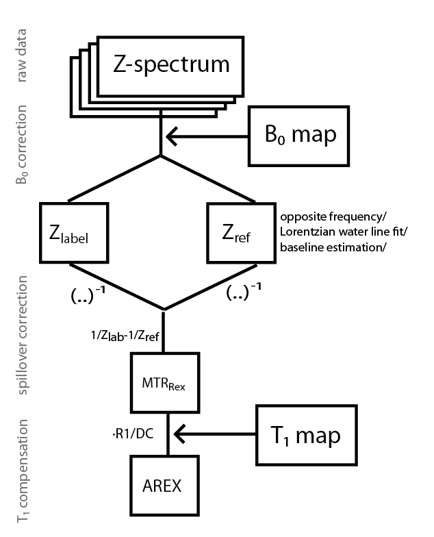
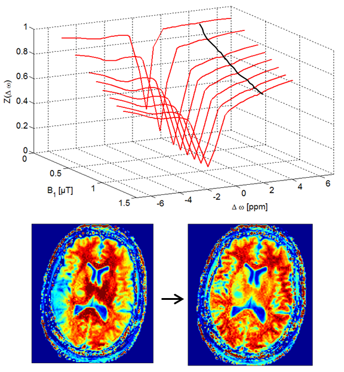
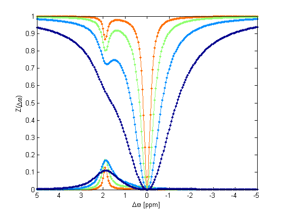
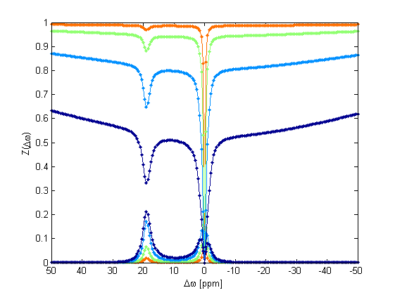
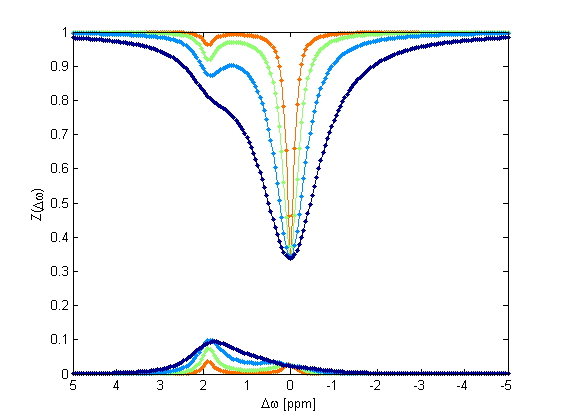
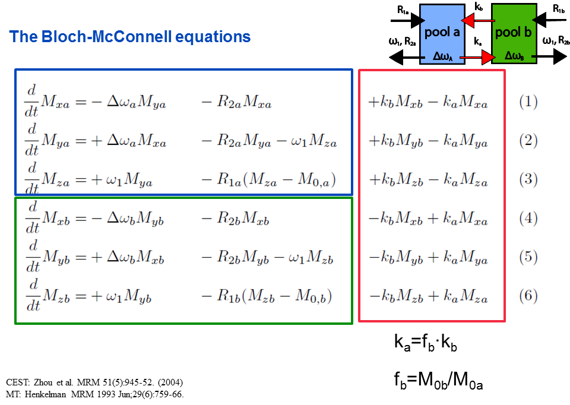
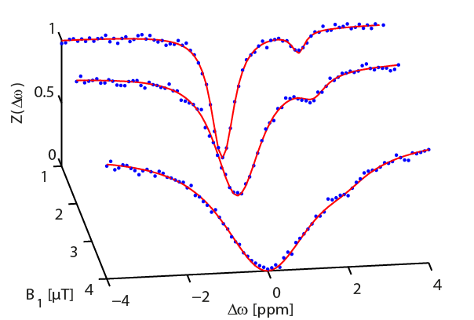

CEST sources
Welcome to CEST sources! CEST stands for Chemical Exchange Saturation Transfer, a Magnetic Resonance Imaging (MRI) technique which promises insight into pathologies on a molecular level. If you want to know more about CEST, find details in the CEST intro or the reviews. CEST sources is a project to share code, link resources, and bundle knowledge about CEST. CEST sources is intended for helping researchers and students in the field of CEST and magnetization transfer. Most code is in Matlab but we try to upload other implementations, too.
Overview
Find below the different sections of CEST sources. For now the focus is on Z-spectra evaluation methods, and Z-spectra simulation and fitting. Each subsection contains links to code and video tutorials. All code is kept simple to be easily adjustable for your scientific question. If you have a suggestion for a video tutorial feel free to contact us.
Download links to all packages can be found on the github page github.com/cest-sources. (About github)
1. Data evaluation tools
1.1 Image data preprocessing - Normalization, B0 correction, Lorentzian fitting, and contrast computation

CEST data evaluation tool1.2 Z-spectra B1-correction

Correction for B1 inhomogeneity artifacts in CEST images2. Analytical solutions of the Bloch-McConnell equations
Here you find Z-spectrum simulations in the case of a two and three pool systems under continous wave (cw) irradiation. For a two pool system also the solution for pulsed spinlock irradiation is given.

Analytical solution for 2-pools under cw irradiation
Analytical solution for 3-pools under cw irradiation: water, CEST and semi-soild MT
Analytical solution for 2-pools under pulsed spin-lock irradiation (ISAR2)3. Full numerical solutions of the Bloch-McConnell equations

Full numerical Bloch-McConnell solution4. Quantitative CEST
Here you find methods for CEST quantification. This means to achieve access to the CEST pool parameters as defined in the Bloch-McConnell equations such as exchange rate, concentration and transverse relaxation of the CEST site.

CEST quantification by a Multi-B1-fit under cw irradiation - 2 pools5. CEST Theory
Here you find some Mupad codes for getting more theoretical insight into the eigenspace solution that forms the analytical CEST solution.
Bloch, Bloch-McConnell, and CEST-Theory
6. standard CEST protocols
For reproducible CEST we need to agree on some standard protocols. Find a collection of used sequences here. standard CEST protocols
7. Literature
CEST sources was initiated 2014 at the German Cancer Research Center (DKFZ), Heidelberg Germany by the project group CEST imaging.
It is now hosted at Max Planck Institute for Biological Cybernetics, Tübingen and part of the european GLINT project. If you want to publish or link to code here, too, feel free to contact us.